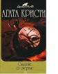

В романе "Карты на столе" Эркюлю Пуаро предстоит непростая задача: вычислить убийцу, совершающего преступления по законам карточной игры и блестяще умеющего блефовать. Лишь тщательный анализ записи партии в бридж может стать ключом к разгадке цепи убийств, потрясших солидную лондонскую компанию. В романе "Свидание со смертью" на упомянутое свидание отправляется богатая американка, путешествующая с семьей по Ближнему Востоку. Оказавшийся в центре событий Пуаро решает помочь полицейским разгадать тайну убийства.